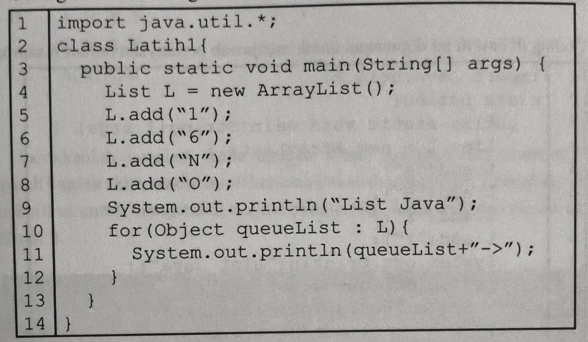
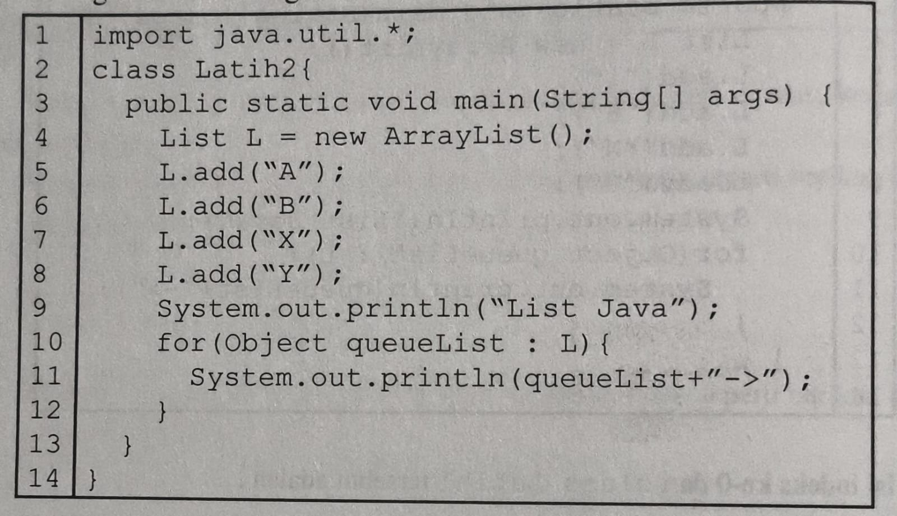

📘 Modul 1
Tes Formatif 1, 2, 3
Seseorang diberi tugas menduplikasi file yang berekstensi .pdf dari drive C menuju ke drive D. Kegiatan tersebut dapat diartikan sebagai ...
Berikut adalah alur kinerja dari pembuatan kopi:
* Siapkan
cangkir kosong, sendok, tempat kopi, tempat gula, termos berisi
air putih panas;
* Masukkan satu sendok kopi dan satu sendok gula ke dalam cangkir;
* Tuangkan air dalam termos ke dalam cangkir yang telah
berisi kopi dan gula;
* Aduk isi cangkir dengan menggunakan sendok;
* Secangkir kopi panas siap dihidangkan.
Serangkaian alur di atas dapat disebut.....
Jika tahapan dari algoritma ingin diimplementasikan ke dalam sebuah komputer, maka hal tersebut disebut dengan.....
Istilah berikut yang bukan termasuk interface dalam struktur data, adalah .....
Operasi yang memiliki kemampuan untuk menghapus elemen di akhir queue adalah....
Operasi untuk menambahkan elemen x di awal stack adalah....
Operasi untuk menambahkan elemen pada akhir antrean deque adalah....
Penambahan elemen yang dapat dilakukan baik di depan maupun di belakang antrean, disebut dengan .....
Konsep dasar dari stack adalah....
Penerapan efisiensi pada operasi struktur data dapat dibagi dalam dua bagian, yaitu ....

Nilai Big-Oh dari programming di atas adalah
Nilai 5 faktorial adalah....
Operasi yang termasuk dalam perbandingan adalah....
Operasi yang termasuk dalam aritmatika adalah.....
Operasi yang termasuk dalam operasi word bitwise Boolean adalah.....
Suatu istilah untuk membuat nilai running time sekecil mungkin, disebut dengan....
Kesesuaian fungsi dan program dalam struktur data perlu dicek kebenarannya. Istilah dari kasus ini adalah....
Running time yang hampir mendekati target dikenal dengan istilah....
Hasil running times yang melebihi target dari pembuatan program disebut....
Bahasa pemrograman yang digunakan pada materi struktur data pada modul ini adalah....
Jenis compiler yang digunakan pada materi struktur data pada modul ini adalah....
Data dengan nilai "7,50" termasuk tipe data.....
Data dengan nilai "8" termasuk tipe data....
Perintah untuk memindahkan kursor ke baris baru adalah.....
Teks "materi struktur data", termasuk dalam tipe data....
Jika Anda pahami kembali mengenai class, maka Linux dapat dikategorikan ke dalam class....
📘 Modul 2
Tes Formatif 1, 2, 3
Terdapat bagian yang dilingkari pada gambar berikut, bagian tersebut termasuk dalam bagian...
Terdapat bagian yang dilingkari pada gambar berikut, bagian tersebut termasuk dalam bagian...
Terdapat bagian yang dilingkari pada gambar berikut, bagian tersebut termasuk dalam bagian...
Terdapat bagian yang dilingkari pada gambar berikut, bagian tersebut termasuk dalam bagian...
Bahasa pemrograman Java termasuk dalam bahasa pemrograman yang berorientasi...
Bentuk umum dari deklarasi array dimensi dua adalah
📘 Modul 3
Tes Formatif 1, 2, 3
Tipe data dari variabel x adalah
Nilai dari variabel y adalah....
Hasil yang akan ditampilkan pada layar komputer berdasarkan pada baris ke-5 adalah ....
Hasil yang akan ditampilkan pada layar komputer berdasarkan pada baris ke-6 adalah....
Tipe data dari variabel a adalah ....
Nilai dari variabel b adalah ....
Hasil yang akan ditampilkan pada layar komputer berdasarkan pada baris ke-5 adalah ....
Hasil yang akan ditampilkan pada layar komputer berdasarkan pada baris ke-6 adalah ....
Isi dari array Angka indeks ke-1 adalah
Isi dari array Angka indeks ke-2 adalah
Isi dari array Angka indeks ke-3 adalah
Isi dari array Angka indeks ke-4 adalah
Isi dari array ATinggi [indeks ke-0][indeks ke-2] adalah....
Isi dari array ATinggi [indeks ke-0][indeks ke-3] adalah ...
Isi dari array ATinggi [indeks ke-1][indeks ke-1] adalah
Isi dari array ATinggi [indeks ke-1][indeks ke-0] adalah

Isi indeks ke-0 dari class Latihl tersebut adalah....
Isi indeks ke-3 dari class Latihl tersebut adalah.....
Isi indeks ke-1 dari class Latihl tersebut adalah ....
Isi indeks ke-2 dari class Latihl tersebut adalah .....
Rangkaian output dari class Latihl tersebut adalah

Huruf X pada baris ke-7 akan tersimpan pada linked list indeks ke-....
Huruf A pada baris ke-5 akan tersimpan pada linked list indeks ke-
Huruf Y pada baris ke-8 akan tersimpan pada linked list indeks ke-....
Huruf B pada baris ke-6 akan tersimpan pada linked list indeks ke-
Serangkaian huruf yang dihasilkan dari class Latih2 adalah
📘 Modul 4
Tes Formatif 1, 2, 3